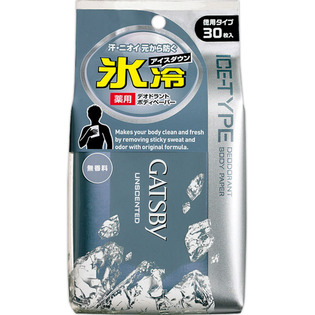
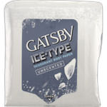

返回列表
产品名称：ギャツビー アイスデオドラントボディペーパー 無香料 徳用

マンダム ギャツビー アイスデオドラントボディペーパー 無香料 徳用 ３０枚（医薬部外品）
メーカー マンダム
JANコード 4902806417265
商品の特徴
徳用タイプ
汗・ニオイ元から防ぐ
氷冷アイスダウン
薬用デオドラントボディペーパー
成分・分量
【有効成分】
イソプロピルメチルフェノール、パラフェノールスルホン酸亜鉛
【その他の成分】
エタノール、精製水、l-メントール、ポリオキシエチレンポリオキシプロピレンデシルテトラデシルエーテル
用法及び用量
【使用方法】
○表面のシールをＯＰＥＮのところから開け１枚ずつ取り出してお使いください
○中味の乾燥を防ぐためご使用後はシールを元のようにしっかり閉めてください